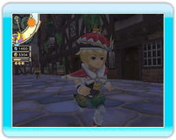

● Ik wil langer uit blijven maar Chime stuurt me bij zonsondergang naar bed!

Als je de stemming genoeg verbetert, zullen de families gelukkig worden. Dan zullen ze verlichting aan hun portaal hangen, zodat u langer uit mag blijven.
● Wat zijn "special sales" (speciale verkoop)?
De winkels hebben speciale verkoopdagen wanneer hun verkoop een bepaald niveau bereikt. Op die dagen verkopen ze zeldzame voorwerpen. De betroffen winkels onderscheiden zich door de opvallende lichtdecoraties bij hun ingang.
● What zijn "holidays" (vakantie)?
Vakantiedagen veroorloven avonturiers een beetje rust nadat ze gevaarlijke kerkers hebben geëxploreerd. Avonturiers die uitgeput waren, kunnen thuis blijven en uitrusten. De volgende dag zullen ze efficiënter zijn. Op die dagen trekt de koning vakantiekleren aan: dat lokt uiteraard verschillende reacties uit bij de burgers.

Opmerking: gedurende feestdagen is het niet mogelijk andere opdrachten op te hangen.
● Ik wil meer structuren bouwen maar ik heb nooit genoeg elementite.
Denk eraan een groepje te vormen waarin een dief zit met de "Treasure finding" (schatvondst) bekwaamheid. Deze bekwaamheid zal de hoeveelheid elementite die in kerkers wordt gevonden aanzienlijk vergroten. Opgelet! U moet eerst een "gaming hall" (speelzaal) bouwen om een avonturier in dief te veranderen.
● Ik heb meer gil nodig!
De inkomsten hebben een direct verband met het aantal burgers in je koninkrijk en de grote huizen ("spacious houses") trekken meer mensen aan dan kleine huizen. De gelukkige families zullen ook grotere tienden betalen.
● Hoe kan je het aantal avonturiers verhogen?
Ontwikkel het koninkrijk en je zult toegang krijgen tot "guild halls" (gildezalen). Alz je zo'n gildezaal zal het mogelijk maken het aantal avonturiers te verhogen.
● Het is onmogelijk deze kerker te exploreren!
Lees de verslagen van de avonturiers aandachtig. Misschien bevatten ze tips over de manier waarop je de kerker moet exploreren.

Als je avonturiers een probleem hebben met de baas van een kerker, zou je eraan moeten denken de kerker verder te exploreren en zo je exploratiepercentage te verhogen. Kortere wegen en restauratiefonteinen zullen je adventuriers toestaan met betere kansen tegen de baas te vechten.